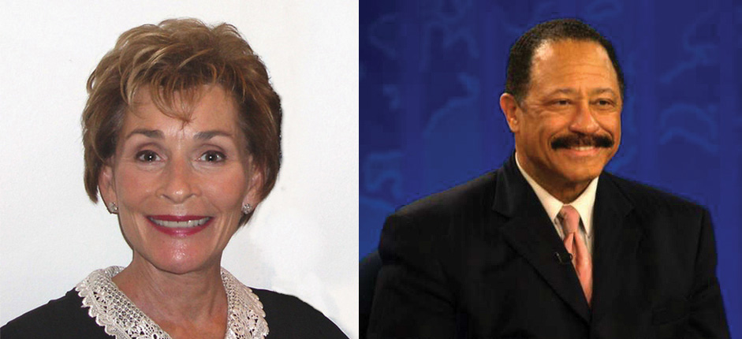
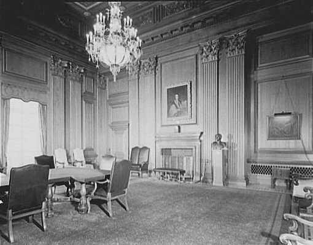

After reading this section, you should be able to answer the following questions:
The American legal system handles a vast number of disputes and controversies. Our concern in this text is with civil and criminal cases, the main ways by which courts wield power and influence and make policy.Patricia Ewick and Susan S. Silbey, The Common Place of Law (Chicago: University of Chicago Press, 1998), 18–19.
In civil cases, plaintiffs (people or organizations) initiate lawsuits against defendants; courts resolve disputes by deciding or mediating between the two sides. Civil cases can involve money, contracts, property, personal injury, divorce, or child custody. “I’ll sue you” is a threat to instigate a civil action.
The vast majority of civil cases, some seventeen million annually, are filed in state courts, compared to around four hundred thousand in federal courts. State and federal laws establish the type of civil cases their courts can hear. For example, because there is no federal divorce law, all divorce cases are heard in state courts; because Social Security is a federal program, all civil disputes involving it are heard in federal courts.
Because of their costs and the often lengthy delays until they are heard in court, only about 1.3 percent of civil suits filed go to trial. Most civil cases are resolved by other means, such as settlements, plea deals, mediation, or arbitration.
Criminal cases are initiated by the government. They run the gamut from misdemeanors, such as trespassing and disorderly conduct, to felonies, such as armed robbery, rape, and murder. Unlike civil cases, criminal cases can result in the loss of liberty: a jail sentence. Around seven million people in the United States are either in prison, on probation, or on parole for crimes committed.
Most criminal laws are passed by states, and the vast majority of criminal cases originate in state courts: roughly twenty-one million criminal cases annually, compared to about seventy-six thousand in federal courts.
Around 27 percent of the criminal cases heard in federal courts involve alleged violations of federal drug laws. Often requiring mandatory sentences without parole, these federal laws are much tougher than state laws, so it makes an enormous difference whether a drug offense case is tried in a federal or state court.
Only about 4 percent of criminal cases are decided by trial. Prosecutors drop, or do not continue with charges, on another 25 percent. Most of the rest are resolved by guilty pleas without going to trial. Even for murder or manslaughter, a majority of defendants plead guilty. This often entails a plea bargainAgreement whereby a defendant agrees to plead guilty in return for a lighter sentence, a reduced charge, or both., in which defendants plead guilty in exchange for a reduced charge. The judge must approve the plea bargain.
Except for affluent defendants with high-powered and well-paid attorneys, people involved in criminal cases have an incentive to plea bargain. Defendants who insist on going to trial face sentences that can be far longer than those received by defendants who plead guilty and cooperate with the government. For lawyers and judges, plea bargains save both time and trial costs and also lighten their workloads. Because so many plead guilty, forty-seven million Americans have criminal records.Amy Beach, Ordinary Injustice: How America Holds Court (New York: Metropolitan, 2009).
Dubbed “tabloid justice,” news depictions of the criminal justice system, especially on cable television, focus on dramatic, sensational, and lurid cases.Richard L. Fox, Robert W. Van Sickel, and Thomas L. Steiger, Tabloid Justice: Criminal Justice in an Age of Media Frenzy, 2nd ed. (Boulder, CO: Lynne Rienner Publishers, 2007). A notorious instance was the Duke University lacrosse team rape story, which provoked a prodigious amount of often erroneous news coverage as well as outrageous opinions and judgments (notoriously from television commentator Nancy Grace) from March 2006 until April 2007, when all charges against the students were dropped and the case dismissed.
The types of cases receiving excessive and inflammatory coverage include those of a basketball star (Kobe Bryant) charged with rape; an actor (Robert Blake) accused of killing his wife; a decorating diva (Martha Stewart) charged with lying to the FBI; a pop star (Michael Jackson) accused of molesting children; and a mother (Casey Anthony) accused of killing her daughter. The media want, as the chief executive of truTV (formerly Court TV) put it, “the type of trials that have all the melodrama of a soap opera.”Quoted in Lola Ogunnaike, “As Court TV Gets Even Bolder, So Does Its Star,” New York Times, December 2, 2004, B1.
Figure 15.1 Judge Judy and Judge Joe Brown
Many people’s understanding of and opinions about courts are based on watching television’s fictional judges.
Source: Photo (left) courtesy of Susan Roberts, http://commons.wikimedia.org/wiki/File:Judge_Judy.jpg. Photo (right) courtesy of Phil Konstantin, http://en.wikipedia.org/wiki/File:Joebrown.jpg.
Even trials covered live on television may be unrealistic examples of how the US criminal justice system operates. The trial of O. J. Simpson, accused of the murder of his ex-wife and a friend of hers, attracted huge attention from the news media and the public during the mid-1990s. Simpson was a celebrity defendant with sufficient wealth to hire a cast of attorneys and undergo a lengthy trial. In reality, most criminal trials take little time. The Los Angeles Superior Court disposed of nearly fifty-two thousand cases between the time of Simpson’s arrest and his acquittal.“Simpson Trial and Trivia,” US News & World Report, October 15, 1995, 43.
Trials are a staple of entertainment drama.See Timothy O. Lenz, Changing Images of Law in Film & Television Crime Stories (New York: Peter Lang, 2003); and Anthony Chase, Movies on Trial: The Legal System on the Silver Screen (New York: New Press, 2002). Many television series and their spin-offs involve trials. These shows differ drastically from the reality of courts and trials through the addition of drama and emotion: the highlights of cross-examination, attorneys browbeating witnesses and making speeches, and the guilty confessing. They rarely contain procedural elements, and the issues of “jurisdiction, notices to defendants, pleadings, discovery, and choice of a judge or jury trial, all of which can be argued, replied to, and motioned against.”Wende Vyborney Dumble, “And Justice for All,” in Television Studies, ed. Gary Burns and Robert J. Thompson (Westport, CT: Praeger, 1989), 106. As David E. Kelley, creator of The Practice and a former lawyer said, “I am writing the world of law in the way I would like it to be. It’s all a conceit, because most trials are boring.”Thane Rosenbaum, “Where Lawyers with a Conscience Get to Win Cases,” New York Times, May 12, 2002, AR 23.
Relatedly, trial judges are usually portrayed on television as legitimate and judicious, and their decisions almost always as correct. Consider the pseudorealistic television courtroom shows represented by Judge Judy and Judge Joe Brown.
The prevalence of courtroom shows is a testament to their appeal and to television’s need for cheap and relatively easy-to-produce programming. Frequent viewers believe that judges should—as these “judges” do—ask questions, be aggressive with litigants, express views about their testimony, and make known their opinions about the outcome of the cases.Kimberlianne Podlas, “Should We Blame Judge Judy? The Messages TV Courtrooms send Viewers,” Judicature 86, no. 1 (July–August 2002): 38–43. This is, in fact, the opposite of how most real judges behave.
The first sentence of Article III of the US Constitution created the US Supreme Court—a major innovation. The Articles of Confederation made no provision for a federal judiciary, only for courts created and controlled by the states.
Article III also gave Congress the authority to create lower federal courts. After the Constitution was ratified in 1789, Congress quickly did so through the Judiciary Act of 1789.
The Judiciary Act
Learn more about the Judiciary Act of 1789 online at http://www.loc.gov/rr/program/bib/ourdocs/judiciary.html.
There are 94 federal district courts staffed by 667 permanent and several temporary judges. Every state has at least one district with a district court in it responsible for hearing cases that arise within that geographic area.
Above the district courts are the federal courts of appeal. They decide whether or not district courts have made an error in conducting a trial. Judges on appeal courts base their rulings on written and oral legal arguments presented by lawyers for each side. There are no witnesses, no testimony, and no jury. Appellate courts answer questions of law rather than questions of fact.
There are currently thirteen courts of appeals, twelve of them based on geographic districts called “circuits.” There are eleven numbered circuits, each of which has jurisdiction over several states. No state straddles more than one circuit.
There is a twelfth circuit for the District of Columbia (known as the “DC Circuit”). The thirteenth circuit is the court of appeals for the “Federal Circuit,” which hears appeals from US Courts of Federal Claims, International Trade, the Patent and Trademark Office, and others. There are approximately 179 judges on the courts of appeals.
A case in district court is usually presided over by one judge, whereas an appeal before a court of appeals is typically heard by a panel of three judges. A majority vote of the panel is necessary to overturn a lower-court ruling. The court of appeals issues a written ruling explaining its decision.
Every litigant in federal court has the right to appeal an unfavorable ruling from the district court. However, because it is expensive to appeal, only about 17 percent of eligible litigants do so. Moreover, higher courts hear few of the cases appealed and rarely reverse lower-court decisions.Donald R. Songer, Reginald S. Sheehan, and Susan B. Haire, Continuity and Change on the United States Courts of Appeals (Ann Arbor: University of Michigan Press, 2000).
The Supreme Court, the nation’s highest tribunal, hears cases arising under the Constitution or the laws of the United States. The Constitution gives Congress the authority to set the number of Supreme Court justices, and it has changed the number several times. The Court started with five justices; it now has nine.
The Constitution does not stipulate any specific qualifications, not even a minimum age or legal training, for Supreme Court justices and other federal judges. Of the over one hundred individuals who have served on the Supreme Court, all except four women and two African American males have been white men.
Article III and the Eleventh Amendment of the Constitution require that the Supreme Court be the first court to hear certain types of cases. This original jurisdiction is limited to cases
Only about 1 percent of the Supreme Court’s cases fall under its original jurisdiction. The rest reach it as appeals from civil and criminal cases that have been decided by lower federal and by state courts. As the highest appellate court in the nation, the Supreme Court is the ultimate arbiter in many areas of the law.
If the case involves a federal question, an appeal can be made from the state’s appellate court of last resort to the US Supreme Court. A federal question exists if a state law is alleged to violate federal law (an act of Congress), a treaty ratified by the US Senate, or the US Constitution; or because something that state officials do is claimed to violate the Constitution or federal law. Grounds for appeal include evidence gathered from an unreasonable search and seizure, a coerced confession, and infringement of a constitutional right to a fair trial.
With rare exceptions, the Supreme Court has absolute control over the appeals it chooses to hear. Of the roughly eight thousand cases appealed to the Court every year, the justices typically agree to review a few hundred.
The justices normally decide around seventy of these with comprehensive written opinions during the Court’s annual term from October through late June to early July. The Court occasionally issues per curiam decisionsShort, unsigned opinion by the Supreme Court, usually for cases it decides without oral argument.: brief unsigned opinions, usually for cases it decides without oral argument.
The justices do not have to give any reasons for accepting or rejecting a case. Even after deciding to hear a case, they can change their minds and “DIG” (dismiss as improvidently granted)To refuse to hear a case after initially accepting it. Supreme Court justices may change their minds about hearing a case without giving any reason. it: in other words, they say that they won’t decide the case after all, again without giving any reason.
Most cases reach the Court by way of a writ of certiorariPetition asking the Supreme Court to review a case.. Certiorari is Latin for “to make more certain.” Litigants who receive an adverse ruling in the federal appeals courts or, in cases involving a federal question, from a state’s highest appellate court can submit a petition for a writ of certiorari to the Supreme Court, asking it to review the case.
It takes four of the nine justices to “grant cert.” This is called the Rule of FourRule stipulating that at least four justices of the Supreme Court must vote to accept an appealed case before it can be heard.. If the Supreme Court does not grant cert, the lower court ruling is left standing. This does not mean that the Supreme Court agrees with that ruling, only that the Court has chosen not to review it.
When the Supreme Court grants cert, it is usually because four or more of the justices believe the case represents an important issue, such as an unresolved constitutional or statutory question on which they are interested in ruling. Sometimes disputes between different courts need to be resolved, or Congress and lower courts need the Court’s guidance on the Constitution. However, it is not unknown for justices to avoid granting cert to important cases because they do not want to rule on them.Lisa A. Kloppenberg, Playing It Safe: How the Supreme Court Sidesteps Hard Cases and Stunts the Development of Law (New York: New York University Press, 2001).
The case for cert is strengthened if it is backed by the solicitor generalJustice department official responsible for presenting the position of the presidential administration before the courts., the presidential appointee in the justice department responsible for presenting the position of the US government to the courts. The solicitor general screens cases before most agencies of the federal government can appeal them to the Court. Consequently, more than half of the Supreme Court’s workload comes from cases under the solicitor general. The justices pay special attention to the recommendations of the solicitor general, nicknamed “the 10th Justice” in the news.
The Solicitor General’s Office
Visit the solicitor general’s office online at http://www.justice.gov/osg.
When cert is granted, the lawyers for each side file a briefWritten argument presented to a court by lawyers on behalf of clients prior to a hearing. making their arguments. Others with a stake in the outcome of the case may, with the permission of the Court, each file an amicus curiae briefBrief raising additional arguments, filed by a third party to a lawsuit. on behalf of one or the other parties to the case. (They may also persuade the Court to take a case.) These “friend of the court” briefs expose the justices to additional arguments and enable them, should they be so inclined, to gauge interest-group attention to a case and the amount of support from the different sides.Paul M. Collins Jr., Friends of the Court: Interest Groups and Judicial Decision Making (New York: Oxford University Press, 2008).
After reviewing the briefs, the justices hear oral arguments, usually limited to an hour split equally between the sides. The justices often interrupt the attorneys with questions, probe arguments made in the briefs, and raise new issues; they may indicate their thinking about the case and possible decision. The arguments can be used by the justices to reach the legal and policy decisions that they preferTimothy R. Johnson, Oral Arguments and Decision Making on the United States Supreme Court (Albany: State University of New York Press, 2004).—unless, that is, one side’s lawyer makes a more convincing argument than the other.Timothy R. Johnson, Paul J. Wahlbeck, James F. Spriggs II, “The Influence of Oral Arguments on the U.S. Supreme Court,” American Political Science Review 100 (February 2006): 99–113. Oral arguments are the only public part of the Supreme Court’s work.
Oral Arguments Heard by the Supreme Court
Find and listen to archived oral arguments online at http://www.oyez.org.
Each justice selects a few law clerksAssistants to Supreme Court justices, selected to assist them in researching cases, deciding which ones to accept, and drafting opinions. (usually four) to assist in researching cases, deciding which ones to accept, and drafting opinions. These clerks are usually honors graduates from the most prestigious law schools.
A clerkship betokens a promising future in the legal profession. Because the clerks’ work is confidential and rarely revealed, the extent of justices’ reliance on their clerks is uncertain. One former clerk writing about the Court charged that the justices granted “great and excessive power to immature, ideologically driven clerks, who in turn use that power to manipulate their bosses.”Edward Lazarus, Closed Chambers: The First Eyewitness Account of the Epic Struggles Inside the Supreme Court (New York: Times Books, 1998), 6. Yet, most justices are so self-confident and versed in the law that it is hard to imagine them being led to make decisions against their will.
Some time after oral arguments, the justices meet in a conference and vote in order of seniority, starting with the chief justice, on how the case should be decided.
Supreme Court Decisions
Read archived Supreme Court decisions online at http://www.findlaw.com/casecode/supreme.html.
The Supreme Court decides cases by majority rule: at least five of the nine justices need to agree for a majority opinionDecision by a majority of the members of the Supreme Court.. They do not, however, have to agree on the reasons for their decision. It is possible for a majority to be composed of justices who agree on their rationale for the decision plus justices who join the decision (but for other reasons) and thus write a joint or individual concurring opinionDecision by a Supreme Court justice that agrees with the majority decision, but for different reasons.. Justices who disagree with the majority opinion almost always write a dissenting opinionDecision by one or more Supreme Court justice that disagrees with the majority decision. or join in a colleague’s dissenting opinion, explaining why they think the majority was wrong. On rare occasions, when a justice wants to make a dramatic statement arguing that the majority is profoundly wrong, she or he will read this written dissent aloud.
Figure 15.2 Conference Room of the Supreme Court
The intimacy of the Supreme Court is best captured by the conference room where the nine justices meet to vote on which cases to hear, to discuss opinions, and to decide cases. The junior member of the Court is responsible for opening and closing the doors.
Source: Photo by Theodor Horydczak, http://www.loc.gov/pictures/item/thc1995011442/PP/.
Bargaining and compromise sometimes ensue in an effort to create a majority coalition.The classic early study of such bargaining is Walter Murphy’s Elements of Judicial Strategy (Chicago: University of Chicago Press, 1964); see also Forrest Maltzman, James F. Spriggs II, and Paul J. Wahlbeck, Crafting Law on the Supreme Court (New York: Cambridge University Press, 2000); and Saul Brenner and Joseph W. Whitmeyer, Strategy on the United States Supreme Court (New York: Cambridge University Press, 2009). A study of justices’ conference notes concludes that the Court’s decisions come from “an intricate and shifting composite of law, politics, policy, principle, efficiency, expedience, pragmatism, dogmatism, reason, passion, detachment, individual personality, group psychology, institutional forces, and external pressures.”Del Dickson, ed., The Supreme Court in Conference (1940–1985): The Private Discussions Behind Nearly 300 Supreme Court Decisions (New York: Oxford University Press, 2001), xxvii. To this list, we would add the desire for approval from social groups with which they identify or associate and from the legal community of law professors and law students.Lawrence Baum, Judges and Their Audiences: A Perspective on Judicial Behavior (Princeton, NJ: Princeton University Press, 2006).
The chief justice, if voting with the majority, determines who will write its opinion. Thus many of the Court’s most important decisions are penned by the chief justice. If the chief justice is not in the majority, the justice in the majority who has served on the Court the longest takes on the assignment.
Coverage of most criminal cases is decided by plea bargains. A few trials attract abundant coverage in news and entertainment media, which depict them unrealistically. The federal court system consists of ninety-four district courts, with at least one in each state, and thirteen appeals courts, each one with jurisdiction over several states. At the top of the judicial system is the Supreme Court. The Supreme Court’s decisions entail briefs, oral arguments, conferences, clerks, and opinions.